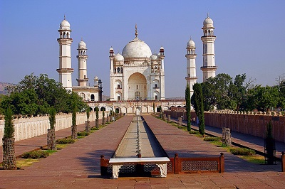

THE MUGHALS
Babur (1526–30)
-
Babur founded the Mughal Empire. He was a Central Asian ruler
who claimed lineage from Timur (the founder of the
Timurid Empire) on his father’s side and from Chagatai,
the second son of the Mongol ruler Genghis Khan, on his
mother’s side. Due to the lineage of Timur, the Mughals are
also referred as Timurids.
-
He originally ruled over Ferghana (Afghanistan). The
unstable political situation in India after Sikandar Lodhi’s
death aided in his entry.
-
It is believed that he was invited to fight against
Ibrahim Lodhi by Daulat Khan Lodhi (Governor of
Punjab), Alam Khan (uncle of Ibrahim Lodhi), and
Rana Sanga of Mewar.
-
The First Battle of Panipat (c.1526 CE): This was one
of the decisive battles of Indian history, fought between
Ibrahim Lodhi and Babur. Ibrahim Lodhi was defeated and Babur
was able to take control of Delhi and Agra.
-
His victory led to rapid popularisation of gunpowder and
artillery in India.
-
Babur occupied Delhi and sent his son Humayun to seize Agra.
Babur proclaimed himself as the “Emperor of Hindustan”.
-
He defeated Rana Sanga of Mewar in Battle of Khanwa in
1527. Babur took the title of ‘Ghazi’ after this.
-
In Battle of Chanderi (1528), he defeated Medini Rai,
the Rajput ruler of Malwa.
-
He was deeply learned in Persian, Arabic and Turkish. He wrote
his memoir in Turki called Tuzuk-i-Babri/Babarnama.
-
He introduced Char-Baghs, symmetrically laid out
gardens with running waters and fountains.
-
He died in AD 1530 and was buried at Aram Bagh in Agra.
Later his body was taken to Aram Bagh at Kabul.
Humayun (1530-40 and 1555-56)
- He was the son of Babur and Maham Anaga begum.
-
Unlike most monarchies, which practised primogeniture, the
Timurids followed the example of Genghis and did not leave an
entire kingdom to the eldest son. Hence Babur had divided his
empire among the three brothers of Humayun.
-
Humayun had to face difficulties from his brothers to ascend
to the throne.
-
He also had to confront the hostility of the Afghans and other
prominent provincial rulers as they were not fully subdued.
This included
Sher Khan, a powerful Afghan of Bihar, and the
provincial ruler of Gujarat, Bahadur Shah.
-
Battle of Chausa (near Buxar, c.1539 CE): Humayun was
defeated by Sher Khan who adopted the title of
Sher Shah Suri. Humayun escaped to Agra, then to Sindh.
-
The Sur Empire (1540–1555), founded by Sher Shah
Suri, briefly interrupted Mughal rule. Shershah was an able
ruler. He improved the transportation by building roads. He
built Purana Qila in Delhi, along with Grand-Trunk road. He
introduced siver rupiya.
-
Humayun wandered about in Sindh (c.1540 CE) and its
neighboring regions trying different schemes to regain his
kingdom. While staying at Amarkot, a Hindu kingdom ruled by
Rana Prasad Rao, Humayun's wife Hamida Banu Begum gave
birth to Akbar(c.1542 CE).
-
Ultimately, Humayun sought shelter at the court of the Persian
king (of Safavid Empire) who forced him to convert to Shia
faith (Mughals were otherwise Sunni), and recaptured Gandhar
and Kabul with his help in c. 1545 CE.
-
In c.1555 CE, following the break-up of the Sur empire,
Humayun defeated the Afghans and recovered the Mughal throne.
Bairam Khan, one of his faithful officers, led his army
to victory.
-
But before he could consolidate his position, only after six
months, he died from a fall from the staircase of his library
at Sher Mandal at Delhi in c.1556 CE. For him, it is said that
“He tumbled through his life and tumbled out of it.”.
-
Humayun's Tomb in Delhi is the first very grand garden tomb in
Mughal architecture, setting the precedent later followed by
the Taj Mahal and many other Indian monuments. It was
commissioned by Humayun's first wife Bega Begum, The tomb was
declared a UNESCO World Heritage site.
Akbar (1556–1605)
-
One of the greatest monarchs of the Mughal dynasty, who was
the son of Humayun and Hamida Banu Begam, born at Amarkot in
c.1542 CE.
-
When Humayun died, Akbar was crowned in c.1556 CE, at the age
of 13 years by Bairam Khan.
-
Bairam Khan represented him in the
Second Battle of Panipat in 1556 AD against Muhammad
Adil Shah Sur’s Wazir, Hemu who led the Afghan forces.
Akbar defeated Hemu.
-
Between 1556-1560, Akbar ruled under Bairam Khan’s regency.
There was a growing arrogance of Bairam Khan. Akbar wanted to
assume full control, he asked Bairam Khan to go to Mecca. On
the way Bairam Khan was assassinated.
-
Rebellion from Nobility: Akbar’s foster mother,
Maham Anaga, and her son, Adham Khan rebelled
against Akbar. In c.1561 CE, Adham Khan was victorious at
Malwa. Adham Khan followed his victory at Malwa with almost
total massacre of the defending army, women, and children, and
sent only parts of the booty to Akbar. Removed from the
command, he laid claim to the post of wazir, and when this was
not conceded, he stabbed the acting wazir in his office.
Furious at his impropriety, Akbar had him thrown down from the
Agra fort.
-
Akbar followed the policy of reconciliation with the
Rajputs. In AD 1562, he married the eldest daughter of Raja
Bharmal of Jaipur, Harakha Bai (or Jodha Bai).
-
He won Gujarat in 1572. In order to commemorate his victory of
Gujarat, Akbar build Buland Darwaja at
Fatehpur Sikri at Agra (UP).
-
At the time of Akbar’s death in AD 1605, his empire included
Kashmir, Sindh, Kandahar and extended as far as the Godavari
in the Deccan.
- He was buried at Sikandara near Agra.
Maharana Pratap
-
A Rajput ruler of Mewar. He was a son of Udai Singh II. In
1568, during the reign of Udai Singh II, Mewar was conquered
by Akbar.
-
Battle of Haldighati was fought in 1576, in which
Maharana Pratap was defeated by Akbar’s army, led by Raja
Man Singh. Maharana had to flee the field on his trusted
horse-Chetak. Thereafter, Pratap had to retreat into the
Aravallis, from where he continued his struggle through the
tactics of guerilla warfare.
Important Aspects of Akbar’s Rule
-
Akbar reorganized the central machinery of administration, on
the basis of division of power between various departments.
-
He abolished the Jaziya and pilgrimage tax, and the forcible
conversion of prisoners of war. The use of beef was also
forbidden.
-
He built an Ibadat Khana at Fatehpur Sikri (UP) to
discuss religious matters.
-
He promulgated a new religion called Din-i-Ilahi
(Divine Monotheism), which believes in one God and in
Sulh-i-Kul /peace to all.
-
His biography was written by Abul Fazal wrote
‘Akbarnamah’, the appendix of which was called
'Ain-i-Akbari'.
-
His land revenue system was known as Todarmal Bandobast or
Zabti system. Zabti System was based on the measurement and
assessment of land.
-
Mansabdari System was another feature of administration
during Akbar’s reign to organize the nobility as well as the
army. Under this system, every military officer (Mansabdar)
was assigned a rank (mansab). The mansab rank was
not hereditary.
-
The Jagirdari System: Iqta of the Sultanate
period in a modified form became Jagir under the Mughals. The
Jagirdari system, that is to say the system of assignment of
revenue of a particular territory to the nobles for their
services to the state was an integral part of the Mansabdari
system.
-
Akbar also had Navratnas in his court. Famous of which
are:
-
Abul Fazal who wrote Ain-i-Akbari and
Akbar Nama.
- Tansen, a great musician.
-
Birbal, His actual name was Mahesh Das. He frequently
had witty and humorous exchanges with Akbar.
-
Raja Todarmal, He was Akbar’s Finance Minister. He
introduced standard weights for measurement and undertook
revenue districts. His revenue collection arrangement came
to be called the Todarmal’s Bandobast. His systematic
approach to revenue collection became a model for the future
Mughals as well as the British.
-
Raja Man Singh the Raja of Amber, a Mansabdar and a
trusted General of Akbar who assisted Akbar in many battles
including the well known Battle of Haldighati.
Jahangir/ Salim (1605–1627 AD)
- Jodha Bai and Akbar’s eldest son, was Salim.
-
He revolted against Akbar in c.1599 CE. After Akbar’s death,
he was crowned at Agra in c.1605 CE, and assumed the title of
Nuruddin Muhammad Jahangir (Conqueror of the World).
-
In c.1611 CE, he married Mehrunnisa (widow of Sher
Afghani). He gave her title of Nur Jahan (Light of the
World).
-
Nur Jahan had great influence on Jahangir’s life and dominated
the royal household. She was given the status of
Padshah Begum and was the only woman in Mughal Darbar.
The coins were struck in her name and all royal farmans also
had her name.
-
A lot of members of her family benefited from this alliance.
She got high positions for her father (chief diwan) and
brother Asaf Khan (was appointed as Khan-i-Saman, royal
kitchen incharge). In c.1612 CE, Asaf Khan’s daughter,
Arjumand Banu Begum (later known as Mumtaz), married
Jahangir’s third son, prince Khurram (later Shah Jahan).
-
Amar Singh of Mewar (son of Maharana Pratap) submitted
to Jahangir. Rana’s son Karan Singh was made Mansabdar in the
Mughal court.
-
The British visited Machlipatnam during Jahangir’s reign.
Captain Hawkins (c.1608–11 CE) and
Thomas Roe (c.1615– 19 CE) visited his court. Thomas
Roe got the farman for setting up an English factory at
Surat (Gujarat).
-
He wrote his autobiography, Tuzuk-i-Jahangiri in
Persian
-
In contrast to Akbar, Jahangir came into conflict with
non-Muslim religious leaders.
-
The fictional tale of his relationship with the Mughal
courtesan, Anarkali, has been widely adapted into the
Literature, Art and Cinema.
-
After Jahangir’s death in c.1627 CE, Shah Jahan reached
Agra and with the support of the nobles and the army, Shah
Jahan ascended the throne. Nur Jahan was given a pension and
she lived a retired life till her death 18 years later.
Shah Jahan (1628–58 AD)
-
Also known as Khurram, whose mother was the Hindu Jagat
Gosain, and was married to
Arjumand Banu Begum (Mumtaz Mahal).
-
Shahjahan’s policy of annexing Deccan was successful.
Ahmednagar was annexed while Bijapur and Golconda accepted his
suzerainty.
-
The Portuguese established their control over
Satgaon (Guwahati, Assam), through a Shahi farman. They
started misusing their authority. In c.1632 CE, Shah Jahan
defeated the Portuguese near Hugli (West Bengal).
-
Shah Jahan’s reign is considered the
‘The Golden age of the Mughal Empire’. He built:
-
Taj Mahal, Agra: Counted among seven wonders of the
world and considered a jewel of the builder’s art. The
construction was commissioned in c.1631 CE and was
constructed in 22 years.
-
Mosque-building reached its peak during Shah Jahan’s reign.
He built the Moti Masjid at Agra (built entirely in
white marble), the Jama Masjid at Delhi was built in
red stone.
-
The climax of fort-building reached during the reign of Shah
Jahan. The famous Red Fort at Delhi was his creation.
-
He built the city of Shahjahanabad(purana dilli).
-
He also build the Peacock Throne (Takht-i-Taus) , on
which is inscribed the Amir Khusrao couplet:
“If there is a paradise on earth, it is here”.
-
Shah Jahan also patronized many writers and historians like
Inayat Khan, who wrote Shah Jahan Nama.
-
His reign is described by french travelers –
Bernier and Tavernier and Italian traveler –
Manucci.
-
Shah Jahan’s sudden illness in c.1657 CE plunged the empire
into a civil war (c.1657–59 CE) among his four sons.
Aurangzeb emerged victorious in this struggle.
-
Aurangzeb made Shah Jahan prisoner in Agra Fort. But he was
not ill-treated. Shah Jahan lived for eight long years nursed
by his daughter Jahanara. He died in c.1666 CE and was
buried beside his wife’s grave in the Taj Mahal.
Aurangzeb (1658-1707 AD)
-
Under him, the Mughal empire reached its greatest extent and
the largest single state ever known in India.
-
His religious policy was a departure from the policy of
tolerance and universal peace followed by Akbar.
-
He reimposed Jaziya. The Hindu Mansabdar, however,
maintained their high proportions during his rule.
-
Aurangzeb’s rule can be broadly divided into two periods, in
the first 23 years, he concentrated in the North, when Maratha
power under Shivaji emerged and the second period
(1682-1707) is marked by his pre-occupations with the affairs
of Deccan.
-
Marathas under Shivaji: Shivaji was a powerful king.
Aurangzeb conspired with Jai Singh of Amber against Shivaji in
1665. Shivaji visited Mughal court on the request of Jai
Singh, but was imprisoned. He managed to escape in 1674 and
declared himself an independent monarch. After his death in
1680, his son and successor, Sambhaji was executed by
Aurangzeb in 1689. Later Marathas continued the movement
against the Mughals.
-
Against Sikhs:
In 1675, he ordered the arrest and execution of the ninth Sikh
Guru,
Guru Tegh Bhadur. Against this, Guru Gobind Singh
organized his followers into a military force called Khalsa,
but he was also murdered in AD 1708 by an Afghan in Deccan.
Later, Banda Bairagi continued the war against Mughals.
-
He built ‘Bibi ka Maqbara’, similar to Taj Mahal in
Aurangabad, Maharashtra.
-
Aurangzeb died in AD 1707 and was buried at Khuldabad
(Daulatabad) near Aurangabad.

Bibi ka Maqbara
Aurangabad, Maharashtra.
With the death of Aurangabad, the Mughal empire declined rapidly
with incapable rulers. Although the empire continued till 1857,
it remained
a shadow of its former self and was never able to attain
the glory, it once enjoyed.
Notable Later Mughals Rulers
Farrukh Siyar (c.1713–19 CE)
-
In c.1717 CE, the Emperor Farrukh Siyar granted to
East India Company many trading privileges, including
the exemption from custom duties for its trade through Bengal.
Mohd. Shah Rangeela (AD 1719-1748)
- Nadir Shah's Invasion
-
Nadir Shah was the Emperor of Iran hailed for driving the
Afghans out of Iran. During the 'rule' of Muhammad Shah
Rangeela , Nadir Shah invaded India in AD 1739 and defeated
Muhammad in the
battle of Karnal (1739)
and he took away
Takht-i-Taus (Peacock throne) and the
Kohinoor diamond.
-
Ahmad Shah Abdali,(founder of the
Durrani Empire, Afghanistan), raided the kingdom for
the first time during his reign.
Alamgir II (AD 1754-1759)
-
Repeated invasions from Ahmed Shah Abdali who occupied
Delhi during his reign.
-
The famous Battle of Plassey (c.1757 CE) was fought
during his tenure between the East India Company and
the combined forces of the Nawab of Bengal,
Siraj-ud-daula
and his French allies.
Shah Alam II (c.1759–1806 CE)
-
Ahmed Shah Abdali defeated the Marathas in the
Third Battle of Panipat in 1761. In this battle,
Marathas were led by Sadashiv Rao Bhau, while the Peshwa at
that time was Balaji Bajirao.
-
Shah Alam II participated in the
Battle of Buxar (c.1764 CE) along with the combined
armies of Mir Qasim, the Nawab of Bengal, and
Shuja-ud- Daula, the Nawab of Awadh, against the
British East India Company. But he was defeated and was forced
to sign the Treaty of Allahabad (c.1765 CE), under
which the Diwani (right to collect revenue) of Bengal
(which included Bihar and Odisha) was granted to the British
East India Company.
Bahadur Shah II (c.1837–57 CE)
-
The last Mughal Emperor who was more a nominal head than
anything else.
-
Participated in the revolt of c.1857 CE; after the revolt, he
was deported to Rangoon, where he died in c.1862 CE.
Mughal Administration
Administrative Posts of Mughals
| Post |
Duty |
| Wazir |
Prime Minister |
| Mir Bakshi |
head of the military administration |
| Mir Saman |
officer in-charge of the royal household and royal
karkhanas
|
| Qazi |
head of judicial department |
| Sadr-us Susur |
Incharge of Religious Matters |
Names of Administrative Units and their heads
| Unit |
Headed by |
| Subah (province) |
subahdar (Governor) |
| Sarkar (District) |
Faujdar(Administratuve Head) and Amil/Amalguzar (land
assessment and revenue)
|
| Pargana or Mahal (Sub-District) |
Shiqdar (Administratuve Head) and Amin/Qaungo (revenue
officials)
|
| Village |
Muqaddam (Village Head man) and Patwari (Accountant)
|
Economy
-
The Indian economy was large and prosperous under the Mughal
Empire.
-
During the Mughal era, the gross domestic product (GDP) of
India in 1600 was estimated at about 22% of the world economy,
the second largest in the world, behind only Ming China but
larger than Europe.
-
By 1700, the GDP of Mughal India had risen to 24% of the world
economy, the largest in the world, larger than both Qing China
and Western Europe.
-
The Mughals were responsible for building an extensive road
system and creating a uniform currency across greater part of
the country.
-
The main base of the empire's collective wealth was
agricultural taxes, instituted by the third Mughal emperor,
Akbar. These taxes, which amounted to well over half the
output of a peasant cultivator, were paid in the
well-regulated silver currency, and caused peasants and
artisans to enter larger markets.
-
Coinage: The Mughals adopted and standardized the
rupee (rupiya, or silver) and dam (copper)
currencies introduced by the Sur Emperor Sher Shah Suri during
his brief rule.
-
Key industries included textiles, shipbuilding, and steel.
-
Important Ports: Surat, Cambay, Cochin and
Masulipattanam.